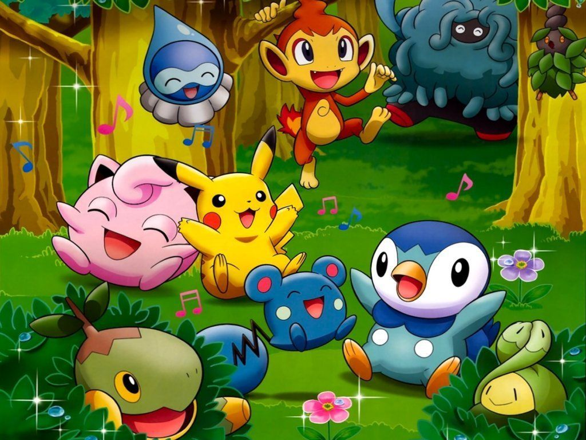

About Pikachu
Pikachu is the cutest Pokemon and the bravest. He is a hero of the pokemon show because he is always helping Ash save the day. He is strong and intelligent. But sometimes he can be really stubborn.
Pikachu and his friends
Pikachu's Characteristics
- He's a bad ass
- He is very smart and moves fast like lightning speed
- He is made out of millions of thunder, so don't get on the wrong side with him
Pikachu's friends
Pikachu has many friends. His best friend is Ash Ketchum. Click on the links to read more about them